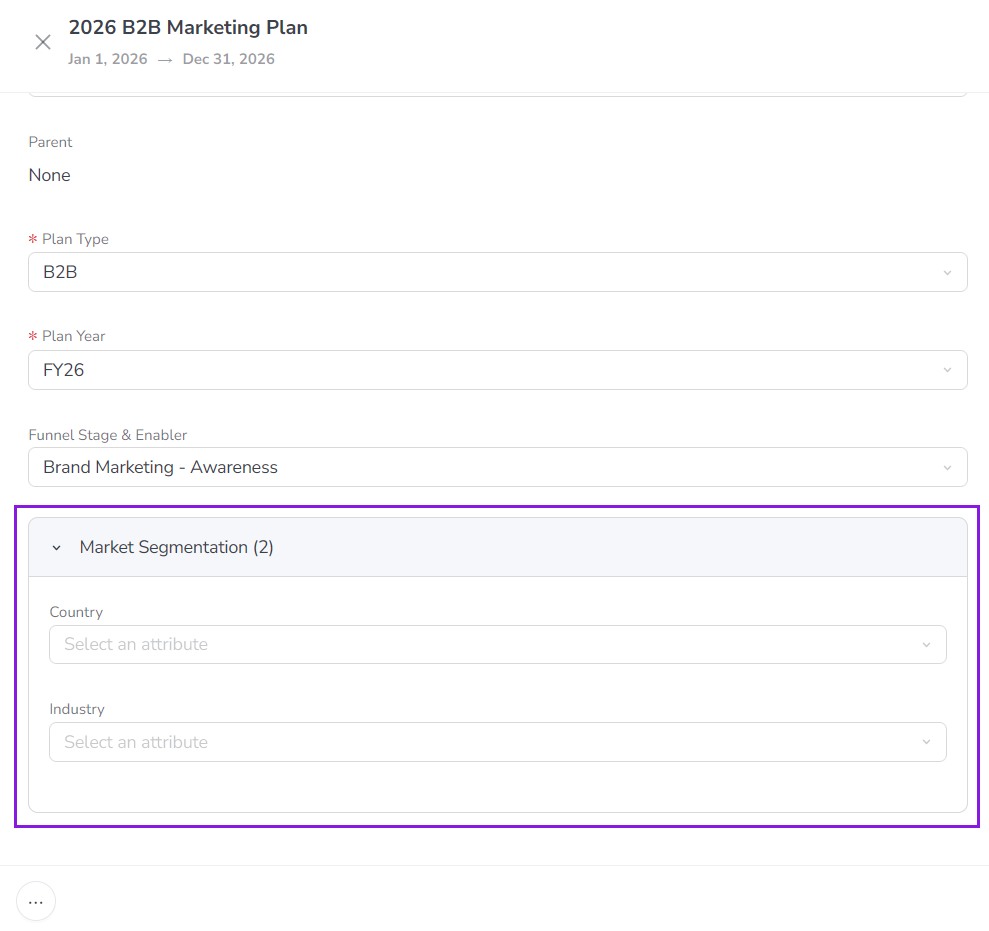

Set up attribute groups
To make it easier for users to enter and view attribute data when they are working with activities, you can organize related attributes into attribute groups. For example, you could create attribute groups for all marketing channel-related attributes or all budget-related attributes.
When attributes are grouped, they are displayed together in a collapsible section in an activity's details panel:

Grouping attributes organizes the activity details panel, making it easier for users to find the attribute data they need (especially for activity types with a lot of attributes).
Create attribute groups
Create an attribute group
In the Activities section, click
 Settings:
Settings: 
On the Activity Configuration page, click Attribute Groups in the navigation menu.
Click Create New Attribute Group. A message is displayed to indicate that a new group has been created.
Open the Attribute Group menu to view the list of existing groups. Select the newly created group (it will have a name like New Group 1).
Enter a name for the new group into the Name field.
Optional: The section for this attribute group will be expanded by default in the activity attributes panel, to display the attributes in the group. If you want the group's section to be collapsed by default (hiding the attributes), deselect the Open by default option.
Manage the attributes in the group:
To add an attribute to the group: Find the attribute in the list of available attributes (on the left) and click
 Add attribute. The attribute is added to the list of selected attributes (on the right):
Add attribute. The attribute is added to the list of selected attributes (on the right): 
To remove an attribute from the group: Find the attribute in the list of selected attributes (on the right) and click
 Remove attribute. The attribute is removed from the list of selected attributes.
Remove attribute. The attribute is removed from the list of selected attributes.To change the display order of attributes in the group: Click on an attribute in the list of selected attributes (on the right) and drag it into the position where you want it to be displayed.
To finish creating your new group, click Save.
Your changes take effect immediately. On any activity that displays attributes that are part of a group, the attributes are now displayed within their groups on the activity's details panel.
Manage attribute groups
Edit an attribute group
You can make changes to any existing attribute group at any time.
In the Activities section, click
Settings.On the Activity Configuration page, click Attribute Groups in the navigation menu.
Open the Attribute Group menu to view the list of existing groups. Select the group you want to edit.
Make any changes to the group as needed, such as changing the name, or adding or removing attributes.
To finish editing the group, click Save.
Your changes take effect immediately.
Change the display order of attribute groups
If needed, you can manually adjust the order in which attribute groups are displayed in the activity details panel.
In the Activities section, click
Settings.On the Activity Configuration page, click Attribute Groups in the navigation menu.
Click Reorder Groups to open the Reorder Attribute Groups dialog.
In the Reorder Attribute Groups dialog, click on an attribute group and drag it into the position where you want it to be displayed.
To save the new display order, click Save.
Your changes take effect immediately, and any activity details panel that displays multiple attribute groups will display them in the specified order.
Delete an attribute group
If you no longer need an attribute group, you can delete it at any time.
In the Activities section, click
Settings.On the Activity Configuration page, click Attribute Groups in the navigation menu.
Open the Attribute Group menu to view the list of existing groups. Select the group you want to delete.
Click Delete. The selected attribute group is deleted and removed from the Attribute Group menu.
Your changes take effect immediately. The attributes that were part of the deleted group are no longer grouped on the activity details panel of any activity where they appear. If needed, you can now add these attributes to other groups.